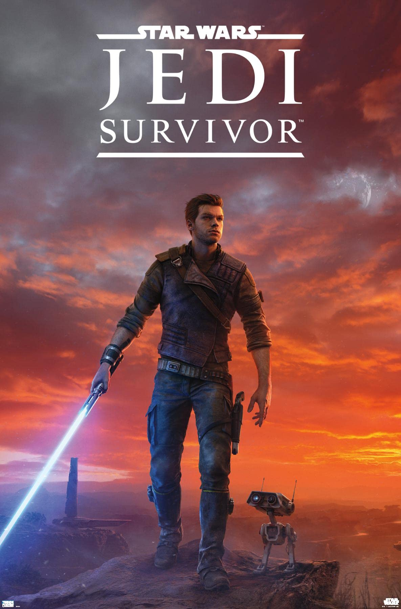
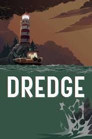

| Imagem | Jogo | Gênero | Plataforma | Horas de Jogo | Zerado | Nota | Data | Platina |
|---|---|---|---|---|---|---|---|---|
|
HA-FI RUSH | AÇÃO/ADVENTURE | Xbox | 16H | ✔ | 8,5 | 24/07/2025 | |
|
REZIDENTE EVILL 5 | AÇÃO/ADVENTURE | Xbox | 9H | ✔ | 7,5 | 20/06/2025 | |
|  | SW JEDI SURVIVOR | AÇÃO/ADVENTURE | Xbox | 46H | ✔ | 8 | 03/07/2025 | 100% |
|
Clair obscur expedition 33 | RPG/TURNO | Xbox | 52H | ✔ | 10 | 12/05/2025 | 100% |
|
Assassin's Creed MIRAGE | AÇÃO/ADVENTURE | Xbox | 23H | ✔ | 6,5 | 17/08/2025 | 100% |
|  | DREGE | PESCA | Xbox | 12,H | ✔ | 7 | 25/05/2025 | |
|
GROUNDED | SURVIVAL | Xbox | 96H | ✔ | 10 | 12/04/2025 | 100% |
|
GEARS OF WAR RELOADED | AÇÃO | Xbox | 8H | ✔ | 7 | 20/09/2025 | |
|
RED DEAD REDEMPTION 2 | ADVENTURE | Xbox | 225H | ✔ | 10 | 06/01/2026 | 100% |